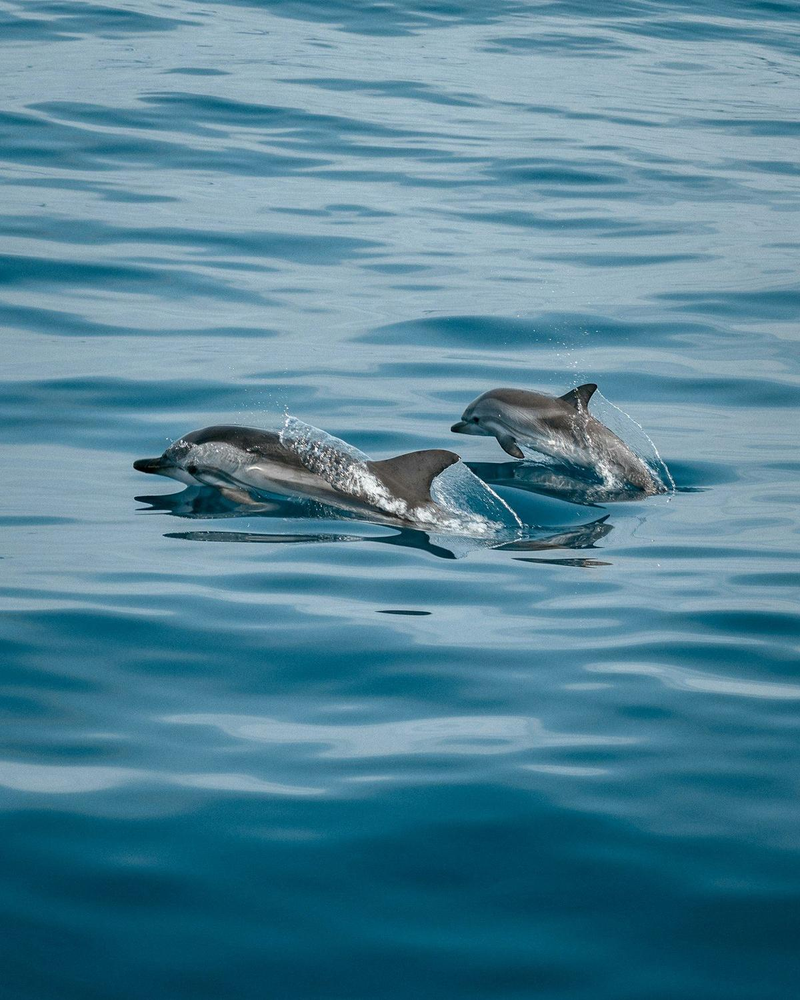
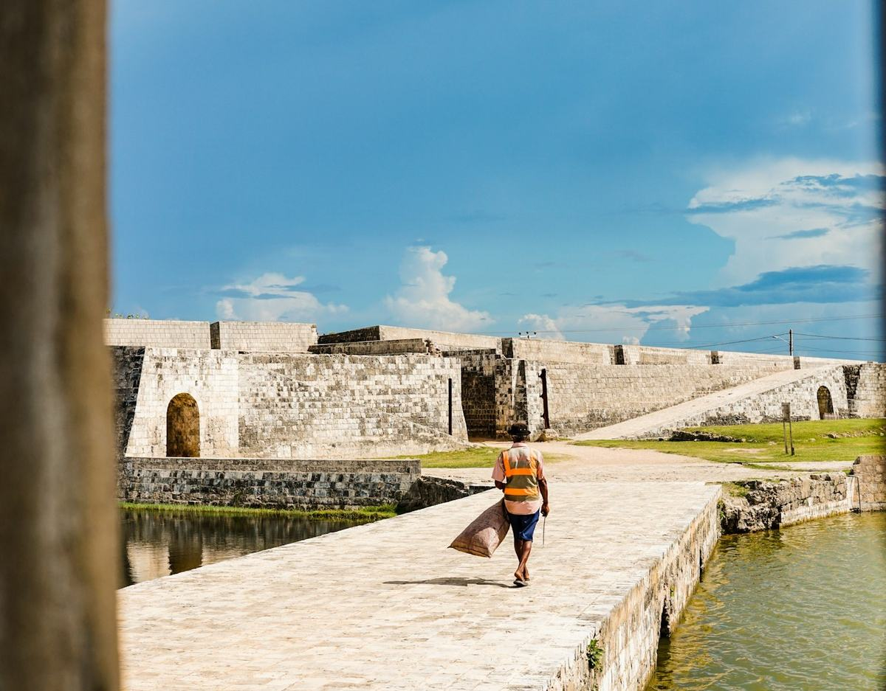
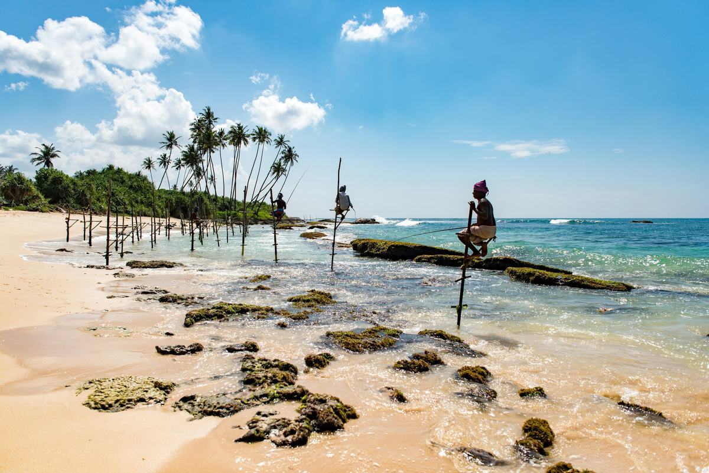

ආයුබෝවන්வணக்கம்Welcome
Let us show you our island.
Private Sri Lanka tours with your own driver-guide, from the people who grow its tea, spice and coconut.
Since 2012
We’ve sourced coconut, spice and tea across Sri Lanka for over a decade. Now we’d like to show you where it grows.
Our storyWhere we go
Six regions, 28 places
Journeys
Start with one of ours


